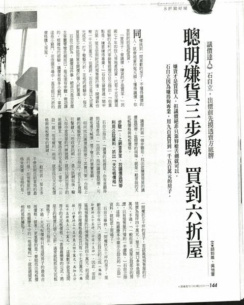
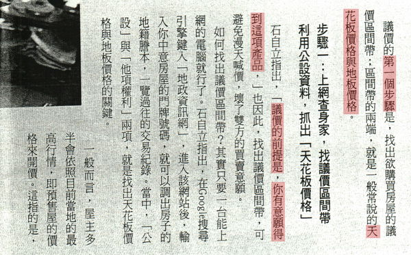
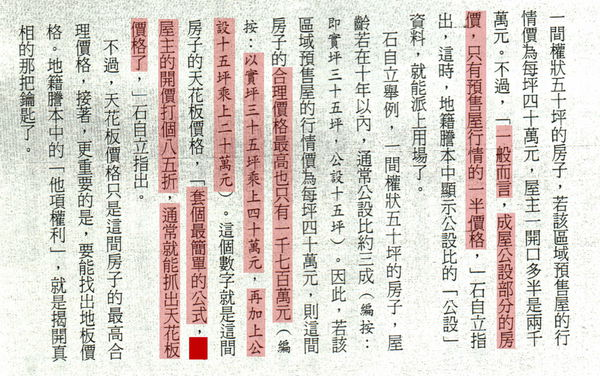
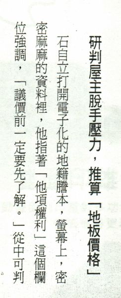
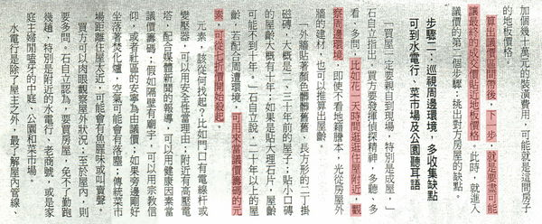
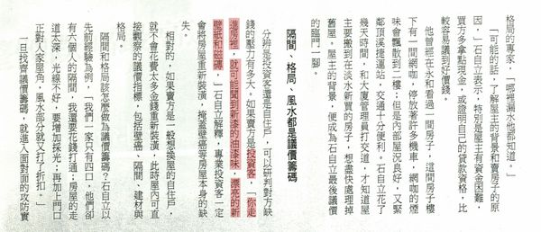
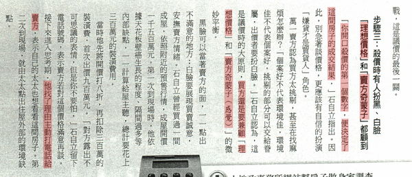
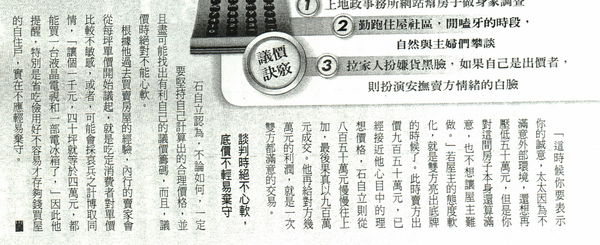
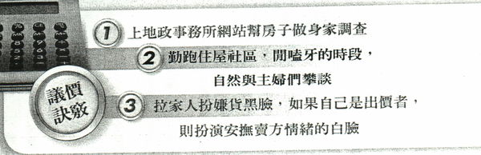

想買房子，如何談價(議價)? @ 房仲日記 :: 痞客邦 ::


 整理資料，翻到之前的 商業周刊(2008.9.1086期)
看到一篇 達人教你如何買屋殺價
雖說時間有一點久遠
當時候也不像現在方便
可以直接查詢 “內政部實價登錄”
簡單知道屋主購屋的成本多少
抓出天花板和地板價格
也就是屋主可能可以接受的成交價位區間
不過方式可以參考看看
[ 下有放大版 ]
整理資料，翻到之前的 商業周刊(2008.9.1086期)
看到一篇 達人教你如何買屋殺價
雖說時間有一點久遠
當時候也不像現在方便
可以直接查詢 “內政部實價登錄”
簡單知道屋主購屋的成本多少
抓出天花板和地板價格
也就是屋主可能可以接受的成交價位區間
不過方式可以參考看看
[ 下有放大版 ]


以下為內容截圖，附上一些些小編淺見 電腦看不清楚內容，麻煩請放大倍數看( 按住ctrl+滑鼠滾輪 )

市場多頭、或是買氣好的時候才會有預售屋，通常是台北比較多，高雄則是近幾年才又出現 至於打幾折的部分，例如中古屋，有的開價比較便宜，有的比較貴 如果通通套用一率打幾折，是比較困難成交， 所以要買屋也要上網作功課，尤其現在成交都必須實價登錄 看看喜歡的房屋是行情價高一些，還是高出許多 再來研究怎麼出價

天花板價格 通常就是 “投資客” 希望賣到的最高價位 地板價格 就是 “投資客” 可以接受的最低價位
如果沒有意願想買這間房屋，但想要了解一下行情 也可以直接問仲介，屋主大概多少願意出售，想知道參考一下 也讓仲介知道這間房屋，妳沒有要進一步洽談 另外再找其他的，通常可以問個大概參考價位 畢竟現在是服務取勝的年代 千萬不要不喜歡，又讓仲介以為你是想進一步洽談 然後讓仲介瞎忙，最後認為你是澳客 這樣以後有好房子、便宜房子或急售的房子 仲介也不會想介紹給你

要和屋主進一步洽談，還是老話一句，先做功課 多做功課才能知道你想買的房屋合不合乎行情 舉例，如果行情1000萬，有人開價2000萬 打85折你會買嗎?
以中古屋為例，因為購屋時間點不同，取得的成本也不同 民國八十幾年和九十幾年，屋主取得的購屋成本就不同 所以才會有中古屋，有的屋主售價較高 不過一般中古屋 8.5折 ~ 9折 是能抓出天花板價格 (因為文章內容是以投資客為例，只是賺多賺少差別) (自住客又不太一樣) 市場上，像小編也常常會遇到自用的屋主會說 [ 當初就買那麼貴了，怎麼可能賠錢賣 ] 但是 屋主原本買屋的成本高，就一定會賣那麼高價嗎 這也不一定 小編也有遇過屋主當初取得房屋成本一千八百多萬 後來成交價一千二百萬

因為文章舉例為 “台北投資客” 小編說一下自住客又會有一些差異 就是情感層面 投資客買屋，有一些根本不看格局採光，有人接手就好 因為不是自己要住，小細節，有的也不在意 但是自住客會考慮的層面比較多 採光、通風，鄰居、學區……..等等 一個在裡面住了20年房屋的屋主， 跟一個只是考慮短時間要賺多少錢的屋主 這兩者想比，相信各位也會知道差異在哪

ˋ 
有些買方不做功課就強調自己貸款少，或不用貸款，想藉此來跟屋主談價錢 這部分要看個案，因為不是每個屋主都有貸款，或有資金困難 小編個人是認為效果不大 現金買賣跟貸款買賣，過戶時間差一到二個禮拜，時間也沒差多少
[ 早期買屋，沒有履約保證，屋主簽約、備件、完稅、交屋 每個部分都可以直接拿到現金，有差別， 現在款項要進履約專戶，結案才讓屋主領完全部款項 ]
除非遇到真的急需用錢屋主，而且買方願意現金不進履約保證專戶 但這個風險需要買方自己負責 案例 [屋主急需用錢，屋主跟買方協議動用款項不進履約專戶 過戶辦到一半，房屋遭到查封法拍，屋主已經把錢花掉 雙方最後只能上法院] 當然也是有一些屋主急用錢案例，成功買賣成交 但是如果沒有經驗的買家，因為會牽扯範圍比較廣 (如卡債、信貸、私人借貸等一些隱藏風險) 奉勸還是不要比較好，風險相對高 下次有機會再跟大家分享”查封中房屋買賣”成交案例

之前小編有發生過買賣雙方都已經談好價格 約定好要簽約 誰知道簽約當天，買方還在玩黑白臉的遊戲 屋主當場翻臉走人 房價當時已經談到很便宜 屋主也已經願意忍痛售屋


希望這篇文章對要買房的各位朋友有說幫助


 房仲日記
007情報站 發表在 痞客邦 留言(0) 人氣(15315)
房仲日記
007情報站 發表在 痞客邦 留言(0) 人氣(15315)
 您尚未登入，將以訪客身份留言。亦可登入留言
您尚未登入，將以訪客身份留言。亦可登入留言